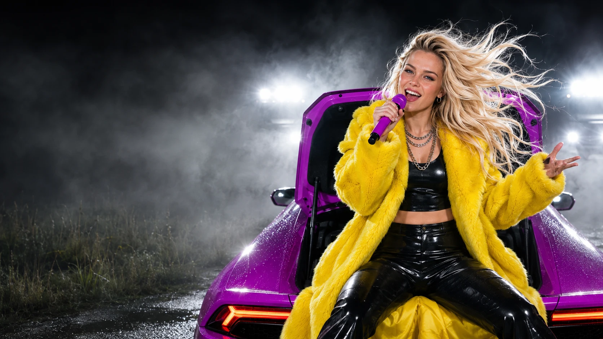
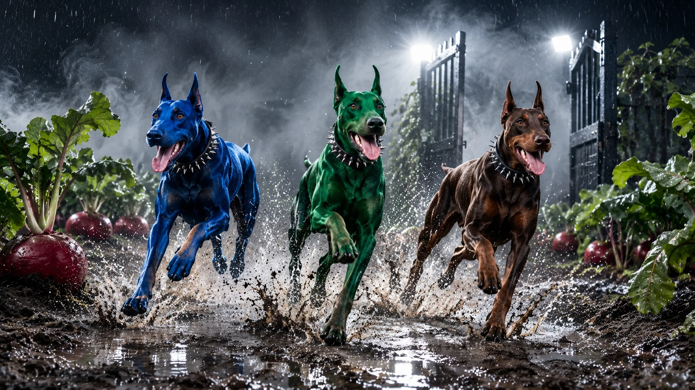

Поле. Ніч. Повна імпровізація.
Фіолетовийтрактор.
Роман має одне питання.
У Віти — зовсім інші плани.
01 / НІЧНА РОЗМОВА ТРИВАЄ
З даху.
Просто в поле.
Спочатку була розмова. Потім з’явилися фіолетовий трактор, город і відкрита фіртка. Тепер Роман хоче знати лише одне.
Хто випустив собак? ↘02 / У РОМАНА Є ПИТАННЯ
Ми все ще
про собак?
РОМАНВіто. Хто все-таки випустив собак?
ВІТАЯ хотіла щавель. Я хотіла салат. А отримала цей перець маскарад.
РОМАНЦе я чув. А фіртку хто відкрив?
ВІТАМій продюсер Сідні не хотіла, щоб через матюки на пісні з’явилася позначка «E».
РОМАНТому — «Baila baila»?
ВІТАДовелося заспівати «Baila baila». Замість… ну, ви поняли. Ха-ха.
РОМАНТобто ми знову не дізнаємося, хто випустив собак?
ВІТАРомане, зачиняй фіртку. З питаннями розберемося потім.
РОМАНУ мене взагалі-то одне питання.
Три теми. Одне нерозкрите питання.
Обери наступну репліку ↑
03 / УСЕ СТОЛОЧИЛИ
Фіртка
відкрита.
Редиска на місці. Лопата теж.
А ці троє вже мають плани на твій город.

Роман теж хоче знати.
04 / ЛІРИЧНИЙ ВІДСТУП
Дайте
лопату.
«Я в тренді, я в бренді,
але в незгоді».
05 / САУНДТРЕК НІЧНОГО ГОРОДУ
Хто випустив
собак?
Відповідь десь між «Woof-woof» і «Baila baila фіртку». Увімкни уривок і спробуй розібратися.
Повний текст пісні
06 / ПОЛЕ ПІСЛЯ ОПІВНОЧІ
За кермом —
Віта.
Роман сів поруч.
Питання поїхало з ними.
Ніч ще не закінчилася.
РОМАН / ПИТАННЯ БЕЗ ВІДПОВІДІ
«Може, хоча б трактор знає, хто їх випустив?»
ВІТА / ЗА КЕРМОМ
«Романе. Пристебнись».
07 / ЦЯ НІЧ У КАДРАХ
Без стоп-кадру.
Натисни на фото, щоб відкрити повністю